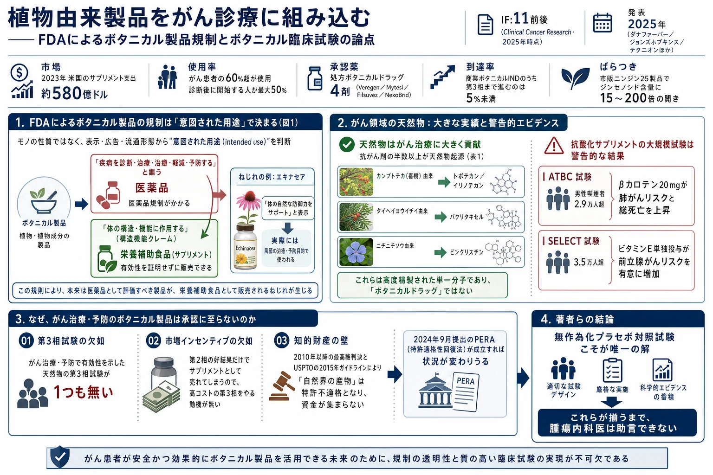
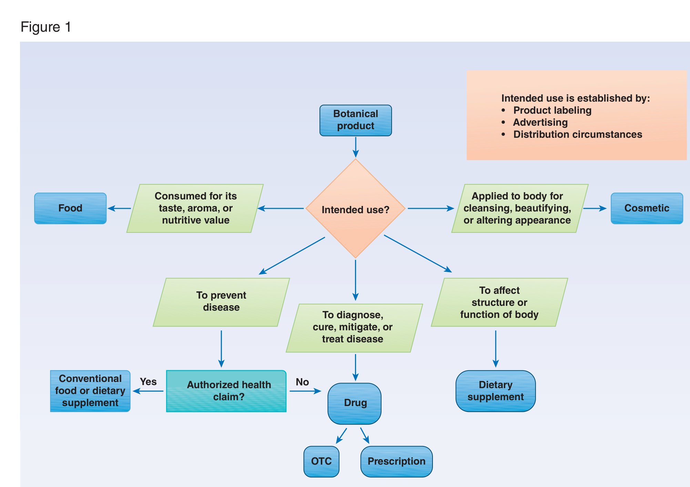

植物由来製品をがん診療に組み込む——FDAによるボタニカル製品規制とボタニカル臨床試験の論点

<!-- 方針: ほぼ全訳＋必要に応じた補足。原文（英語・Clinical Cancer Research 受理原稿）の節構成に沿って訳出。図1は原本PDF最終ページのベクター図をPyMuPDFでレンダリング（右端のダウンロード透かしはredactionで除去）しReadで内容確認のうえ全訳キャプションで埋め込んだ。表1・表2は全行を転記。「> 補足:」は訳者注。原本は購読者向けダウンロード版PDF（アクセス元の透かしあり）である旨をユーザーに報告済み。 -->
書誌情報
- 原題: Integrating Botanicals into Oncology Care: Consideration of FDA Regulation of Botanical Products and Botanical Clinical Trials
- ランニングタイトル: Integrating Botanicals into Oncology Care
- 著者: Tara A. Berman\* ¹・Eran Ben-Arye ²˒³・Gunver S. Kienle ⁴˒⁵・Viraj Master ⁶・Alissa Huston ⁷・Channing J. Paller ⁸
- ¹ ダナファーバーがん研究所／ハーバード大学医学部（米国マサチューセッツ州ボストン）
- ² 統合腫瘍学プログラム, The Oncology Service, Lin・Carmel・Zebulun Medical Centers, Clalit Health Services（イスラエル ハイファ・西ガリラヤ地区）
- ³ テクニオン－イスラエル工科大学 医学部（イスラエル ハイファ）
- ⁴ ヴィッテン／ヘアデッケ大学 応用認識論・医学方法論研究所（ドイツ）
- ⁵ フライブルク大学病院（ドイツ フライブルク）
- ⁶ エモリー大学医学部（米国ジョージア州アトランタ）
- ⁷ ロチェスター大学メディカルセンター 血液・腫瘍部門／Wilmot Cancer Institute（米国ニューヨーク州ロチェスター）
- ⁸ ジョンズ・ホプキンス医療機構 Sidney Kimmel 総合がんセンター（米国メリーランド州ボルチモア）
- 責任著者: Tara A. Berman（450 Brookline Ave, Boston, MA 02115／tara_berman@dfci.harvard.edu）
- 掲載: Clinical Cancer Research. DOI: 10.1158/1078-0432.CCR-24-3419
- 謝辞: 原稿の正確性についてレビューと編集提案をいただいた FDA CDER ボタニカル審査チーム長 Charles Wu 博士に感謝する。C.J. Paller は米国国立衛生研究所（NIH）の支援を受けている（P30 CA006973）。
- 利益相反の開示:
- Berman: Immunogen とのコンサルティング歴あり。Immunogen・Eisai・AstraZeneca のアドバイザリーボード委員を務めた。
- Paller: Bayer・Janssen・Pfizer のコンサルティングおよび講演料を受領。Merck・AstraZeneca から臨床試験資金を受領。
- Kienle: ドイツ医師会誌 Deutsche Ärzteblatt の科学医学編集者。
- Huston: Mediflix・MJH Healthcare Holdings から資金を受領。
- Master: 開示事項なし。
- Ben-Arye: 開示事項なし。
補足: 著者構成が興味深い。ダナファーバー（Zakim統合療法センター）・ジョンズホプキンス・エモリー・ロチェスターという米国の主要がんセンターに加え、イスラエル（テクニオン／Clalit）とドイツ（ヴィッテン／ヘアデッケ、フライブルク） が入っている。統合腫瘍学（integrative oncology）は欧州・イスラエルで制度化が進んでいる分野で、その知見を米国の規制議論に持ち込む構図になっている。 さらに重要なのは、FDA CDER のボタニカル審査チーム長 Charles Wu 博士が原稿の正確性をレビューしているという謝辞である。規制の記述について、規制当局側の当事者が目を通しているということで、本稿の記述の信頼度を大きく上げている。
要旨（Abstract）
現代のがん薬物療法は、天然物・その構造類似体・化学療法剤からの寄与によって構成されている。腫瘍学において天然物への関心が再活性化しつつある。天然物は、その意図された用途に応じて食品・栄養補助食品・医薬品・化粧品として分類されうる。疾病を予防・診断・治癒・軽減・治療することを意図した天然物は、医薬品として規制される。大半の天然物は、身体の構造または機能に作用することを意図した栄養補助食品として規制されている。
2023年、アメリカ人は栄養補助食品におよそ580億ドルを支出し、その大半はがんの予防または治療を意図したものであった。新たにがんと診断された患者のほぼ50%が、診断後に栄養補助食品を摂取していると報告している。ボタニカル——植物、植物の一部、または植物抽出物から作られた天然物——は、最も多く使用されているサプリメントの1つである。
天然物市場は自社サプリメントの販売促進に熱心であり、しばしば自社製品が疾病との闘いに役立つと主張する。FDA承認医薬品とは異なり、ボタニカル栄養補助食品は、主張どおりに機能することを証明せずに販売でき、臨床試験も要求されない。 今日まで、米国で処方箋医薬品として販売承認を受けたボタニカルドラッグ製品はわずか4剤である。
ここでは、栄養補助食品のマーケティングとFDA承認の現行パラダイム、およびそれががん患者の治療に及ぼす影響を評価する。臨床医が、これらの製品を単独で、あるいはがんの積極的治療と併用する場合の安全性と有効性について助言できるだけの、エビデンスに基づく十分なデータにアクセスするために、厳格な臨床試験が必要であることを強調する。
緒言（Introduction）
植物ベースの医療の歴史的な使用は 6万年前にさかのぼり、書かれた証拠は 5000年前の使用を記録している [1]。1890年代という比較的最近まで、生薬または生薬配合は米国薬局方（U.S. Pharmacopoeia）の製品の59% を占めていた [2]。
現在、天然物への関心が再活性化しており、数千種のボタニカル栄養補助食品が店頭で入手可能で、米国成人の5人に1人が生薬製品の使用を報告している [3]。
がんは、生薬・栄養補助食品の使用と関連する主要な医学的状態の1つであり、がんと診断された患者の60%超が、がんの治療のみならず、生活の質（QOL）の改善や薬剤の毒性副作用の緩和のためにこれらの製品を使用している [4]。がんと診断された後、最大50%が栄養補助食品の摂取を開始したと報告している [5]。
同時に使用される生薬・栄養補助食品の数は、化学療法中で中央値7製品から、化学療法の前後では最大11製品にまで及びうる [6]。
生薬・栄養補助食品の使用は、収入と教育水準の高い患者で特に多いが、恵まれない集団（例: 無保険のマイノリティのがん患者）で生薬サプリメントを使用していない人の90%が、より多くの情報を得ることに関心があると述べており、70%が、腫瘍内科医がこれらの実践の安全性と潜在的ベネフィットに触れることを期待していると表明している [7]。
がん患者は、化学療法の副作用軽減、がん進行の遅延、QOLの改善など、多くの理由でボタニカル栄養補助食品を従来療法と併用しうる。がん患者におけるボタニカル製品の使用が広く行き渡っているにもかかわらず、この領域の厳格な臨床試験は不足しており、腫瘍内科医は、がん治療中のボタニカル使用について患者にどう助言すべきかについて、ほとんど情報をもたない。
ここでは、栄養補助食品マーケティングの現状を評価し、米国食品医薬品局（FDA）によるボタニカルサプリメント対ボタニカルドラッグの規制、ボタニカルドラッグ臨床試験における課題、およびがん患者の治療への影響に焦点を当てる。臨床医がこれらの製品の安全性と有効性について、単独であれ、がんの積極的治療との併用であれ、助言できるだけのエビデンスに基づく十分なデータにアクセスするために、厳格な臨床試験が必要であることを強調する。
補足: 冒頭の数字を並べると、この論文が指摘する「ねじれ」がはっきりする。 | 項目 | 数値 | |---|---| | 米国のサプリメント支出（2023年） | 約580億ドル | | がん患者の生薬・サプリメント使用率 | 60%超 | | 診断後に使用を開始する割合 | 最大50% | | 化学療法中の同時使用数（中央値） | 7製品 | | 化学療法前後の同時使用数（最大） | 11製品 | | 米国で入手可能な生薬製品 | 約20,000 | | 処方ボタニカルドラッグの承認数 | 4 | | がんの予防・治療で承認された食品／サプリメント | 0 | 需要と根拠の落差がこれだけ大きい領域は、医療の中でもそう多くない。しかも70%の患者が「主治医に説明してほしい」と思っているのに、その主治医が参照すべきデータが存在しない——ここが本稿の問題意識である。
FDAによるボタニカル製品の分類
ボタニカル、あるいは植物・植物の一部・植物抽出物から作られた製品を含む天然物は、その意図された用途に応じて、連邦食品医薬品化粧品法（FD&C法）のもとで、栄養補助食品・医薬品・通常の食品・化粧品として分類されうる（図1参照）[9]。
意図された用途（intended use） は、1994年の栄養補助食品健康教育法（DSHEA） に従い、製品の表示（labeling）・広告（advertising）・流通の状況（distribution circumstances） によって確立される。本稿はボタニカルサプリメントとボタニカルドラッグの規制に焦点を当てる。
ボタニカル製品が「人体の構造または機能に作用する」ことを意図する場合（構造機能クレーム）、あるいは栄養素・食事成分の摂取による一般的な健康状態を記述する場合、それは栄養補助食品とみなされる [8]。
DSHEAは栄養補助食品を、1つ以上の「食事成分」を含む「食事を補うことを意図した（タバコ以外の）製品」 と広く定義している [8]。食事成分には、ビタミン・ミネラル・生薬その他のボタニカル・アミノ酸、またはそれらの濃縮物・代謝物・構成成分・抽出物・組み合わせが含まれる [8]。ボタニカル（生薬）栄養補助食品は、薬効・治療特性・風味・香りのために価値を認められた植物または植物の一部を含む、1つ以上の生薬その他のボタニカルを含有する栄養補助食品である [9]。
栄養補助食品と（ボタニカル）医薬品の大きな違いは、栄養補助食品は「疾病を診断・治癒・軽減・治療・予防する」と主張してはならないという点である。それらの主張のいずれかを行う製品は、ボタニカルであろうとなかろうと、医薬品として規制される。
しかしながら、栄養補助食品メーカーが行う構造クレームは、しばしば曖昧な言い回しの健康ベネフィット主張である。例えばエキナセア製品は「体の自然な防御力をサポートする」と主張しうるが、大半の人はそれを風邪の治療または予防のために使う。サプリメントでは、これらの主張はメーカーによって実証される必要がなく、食品と同様に規制される。

図1の凡例（原文）: 疾病の予防・診断・治癒・軽減・治療における使用を意図したボタニカル製品は、医薬品の定義（FD&C法 第201条(g)(1)(B)）を満たし、したがって医薬品規制の対象となる。認可された健康強調表示（Authorized Health Claim）: ただし一定の状況下では、医薬品の定義を満たす製品が異なる規制枠組みの対象となりうる。例えば、通常の食品または栄養補助食品が特定の疾病リスク低減についての健康強調表示を行い、その表示が FD&C法 第403条(r)(1)(B)（21 USC 343(r)(1)(B)）に基づいて発行された認可規則に従ってなされる場合、そうした製品は、表示にそのような主張が含まれるという理由だけでは、必ずしも医薬品として規制されない [9]。OTC: over-the-counter（一般用）。
補足: 図1のフローチャートは、米国のボタニカル規制を1枚で理解するのに最良の図である。出発点が「モノ」ではなく「意図（intended use）」 である点が肝心で、同じ緑茶抽出物が、飲料なら食品、「代謝をサポート」ならサプリメント、「尖圭コンジローマを治療」なら医薬品（実際に Veregen として承認済み）になる。 特にややこしいのが左下の分岐である。「疾病を予防する」目的は、本来なら医薬品の定義に入る（FD&C法の医薬品定義は "prevent" を含む）。しかし認可された健康強調表示——FDAが科学的根拠を審査して個別に認めた定型文——を使う場合に限り、食品／サプリメントのままでいられる。例外規定なので該当する表示はごく限られている。 日本の制度に引きつけると、「疾病の予防」を謳える枠が特定保健用食品（トクホ） に近く、「構造・機能」の緩い表示が機能性表示食品に近い。ただし米国の構造機能クレームは届出のみで科学的実証を要求されない点が、機能性表示食品（届出時に研究レビュー等の提出が必要）より緩い。
天然物とがん治療
腫瘍領域の医薬品開発において、天然物は薬物療法に多大な貢献をしてきた。化学療法は当初、第二次世界大戦中に化学兵器として使われたナイトロジェンマスタードから始まり、後に白血病との闘いに用いられた [10]。
1955年、米国国立がん研究所（NCI）は、がん治療の可能性をもつ化合物をより多く評価するため、がん化学療法国立サービスセンター（CCNSC） を設立した。CCNSC は主として、合成品や発酵産物を含む、化学構造がよく知られた化合物を評価していたが、1960年にその範囲を拡大し、植物・動物両方の天然物抽出物や、構造未知の化合物の複雑な混合物もスクリーニングするようになった。
米国農務省が CCNSC の植物プログラムと協力し、抗がんスクリーニングのための植物を NCI に供給した。この10年間のプロジェクトを通じて、1000種の植物抽出物が抗がん活性を試験するため NCI に送られた [11]。そのうちの1つ、**中国の樹木サンプルである Camptotheca acuminata（喜樹）** が、in vivo マウスモデルで強力な抗がん活性を示した。
数十年後、広範な研究を経て、カンプトテシンの2つの類似体、トポテカンとイリノテカンが、卵巣がん・肺がん・乳がん・大腸がんへの使用についてFDAの承認を受けた。その数年後には、タイヘイヨウイチイの樹皮のサンプルが、これまでに開発された最も強力な化学療法剤の1つであるパクリタキセルを生み出すことになる。
今日、化学療法剤の半数以上が、植物・微生物・動物・海洋生物といった天然の供給源に由来している（表1に、天然由来の代表的な化学療法剤の一覧を示す）。
表1 腫瘍領域で用いられる化学療法剤の、ボタニカル・海洋生物・細菌由来の代表例
| 化学療法薬 | 天然の供給源 | 適応 |
|---|---|---|
| トポテカン、イリノテカン | Camptotheca acuminata（喜樹、ハッピーツリー） | 卵巣がん・肺がん・乳がん・大腸がんを含む固形腫瘍 |
| パクリタキセル | タイヘイヨウイチイ（Pacific yew）の樹皮 | 乳がん・卵巣がん・子宮体がん・子宮頸がん・前立腺がん・胃食道がん・頭頸部がん、および肉腫を含む固形腫瘍 |
| ビンクリスチン | ニチニチソウ（Madagascar periwinkle） | 白血病・リンパ腫・神経芽腫・ウィルムス腫瘍を含む固形腫瘍および血液悪性腫瘍 |
| トラスツズマブ エムタンシン | Maytenus ovatus | HER2陽性乳がん |
| エトポシド | メイアップル（Podophyllum、ポドフィルム） | 精巣がん・前立腺がん・膀胱がん・胃がん・肺がんを含む固形腫瘍 |
| トラベクテジン | ホヤ（sea squirt） | 脂肪肉腫、平滑筋肉腫 |
| ダウノルビシン | Streptomyces peucetius | 白血病、カポジ肉腫 |
補足: 表1の顔ぶれを見ると、天然物創薬の「当たり」がいかに広い分類群から来ているかが分かる。高等植物（イチイ、ニチニチソウ、喜樹、メイアップル）、放線菌（ダウノルビシン）、海洋無脊椎動物（ホヤ由来のトラベクテジン）。 トラスツズマブ エムタンシン（T-DM1）が入っているのは一見意外だが、これは抗体そのものではなく、抗体に結合させた**細胞毒性ペイロード「メイタンシノイド（DM1）」が Maytenus ovatus 由来**だからである。最先端の抗体薬物複合体（ADC）でさえ、弾頭は植物アルカロイドという構図になっている。
抗酸化サプリメントの警告的な結果
ボタニカルは、化学療法の毒性を軽減し、がんを予防する可能性についても評価されてきた。ビタミンやカロテノイドといったフィトケミカル抗酸化サプリメントを化学療法・放射線療法中に使用することは、議論の的となってきた。
Bairati らの研究では、放射線療法を受ける頭頸部がん患者 540名に、α-トコフェロール（ビタミンE）とβ-カロテンの毎日のサプリメントを投与した [12]。研究者らは、2つのサプリメントを併用したときに有害事象の発生率が低いことと関連することを見出したが、サプリメント群で局所再発率が高いという有意でない傾向も認められ、抗酸化サプリメントが正常組織だけでなく腫瘍組織をも放射線から保護しうることを示唆した [13]。
さらに、29,000名超の男性喫煙者を対象とした ATBC（Alpha-Tocopherol, Beta-Carotene Cancer Prevention）試験では、
- α-トコフェロール 50 mg を中央値 6.1年にわたり毎日投与すると、前立腺がんのリスクが低下した
- 一方、β-カロテン 20 mg は、肺がんのリスクと全死亡を増加させた [14]
対照的に、平均リスクの男性における前立腺がん予防のためのサプリメントとして、セレンとビタミンEの単独および併用の効果を評価するようデザインされた、35,000名超の男性を対象とする SELECT（Selenium and Vitamin E Cancer Prevention Trial） では、ビタミンE単独投与で前立腺がんリスクの増加が認められ、統計学的有意性に近づいた。そしてより長期の追跡の後、ビタミンE補充が健常男性における前立腺がんリスクを有意に増加させることが確認された [15]。
補足: この3つの試験は、「天然物・ビタミンだから安全」という直感が大規模データで明確に否定された歴史的事例である。 - Bairati 試験: 抗酸化剤は放射線の副作用を減らしたが、同時に腫瘍も守ってしまった可能性がある。放射線治療は活性酸素で腫瘍を殺すのだから、抗酸化剤を飲めば治療効果を打ち消しうる——理屈としては当然だが、実際に臨床データで示された意味は大きい。 - ATBC試験: β-カロテンが肺がんを増やし、総死亡まで増やした。当初の仮説（カロテノイドは肺がんを予防する）と正反対の結果である。 - SELECT試験: ビタミンEが前立腺がんを増やした。追跡が長くなるほど差が明確になった。 「効かなかった」ではなく「害があった」という結論であり、しかもいずれも数万人規模の無作為化試験である。本稿が「厳格な臨床試験が必要だ」と繰り返し訴える最大の実証的根拠がここにある。
もはや「天然」ではない——化学療法剤と真のボタニカルの違い
天然の供給源に由来するとはいえ、カンプトテシン類やパクリタキセルといった化学療法剤は、ボタニカル製品ではない。それらは誘導体、あるいは高度に精製された単一分子実体であり、ボタニカルの定義から除外される。
FDAはボタニカルを、植物材料・藻類・大型真菌、およびそれらの組み合わせを含む製品と定義している。この定義はまた、動物または動物の一部および／または鉱物を含む製品を除外する——ただしこれらの成分が伝統的なボタニカル調製物（例: 中国伝統医学、アーユルヴェーダ医学）の軽微な部分を構成する場合を除く。また、酵母・細菌・植物細胞その他の微小生物の発酵による副産物も、単一分子実体を製造するために用いられる場合（例: 抗生物質・アミノ酸・ビタミン）は除外される。
ボタニカルは、ビタミン・ミネラル・オメガ3脂肪酸に次いで、最も多く使用されているサプリメントの1つである。
ボタニカルを研究する利点
ボタニカルサプリメントまたはボタニカルドラッグの研究を選ぶことには、いくつかの利点が存在する。
腫瘍領域の医薬品開発の標準的アプローチは、供給源から疾病に有効と推定される単一の化学化合物を単離・合成・投与することであった。この供給源から最終製品に至る医薬品開発プロセスは、極めて高コスト・複雑・時間を要するものであり、米国で製品を販売できるようになるまで最大12〜15年、コストは10億ドル超にのぼる [16]。
対照的に、生薬療法は文化的伝統に埋め込まれ、数千年にわたって使われてきた。WHOによれば、アフリカ・アジア諸国のおよそ80%が基本的な保健医療を生薬医薬に依存している [17]。
「品質・安全性・有効性が証明された〔生薬〕医薬は、すべての人々が医療にアクセスできるという目標に貢献する。何百万もの人々にとって、生薬医薬は……主要な医療の供給源であり、時には唯一の医療の供給源である。それはまた文化的に受け入れられ、〔多くの人々に〕信頼されている。」——2013年 WHO事務局長 マーガレット・チャン博士 [17]
生薬の使用は文化的伝統の一部であり、世代を超えて使われてきた。また比較的安価である。
さらに、ボタニカル製品は多数の化学実体からなる複雑混合物である。広く研究された植物においてさえ、その成分のごく一部しか単離・特性評価されていない。これらのボタニカル構成成分は、既知のものも未知のものも、相乗的な活性をもちうる。
シナジー（相乗作用） とは、複数の物質が協調的に相互作用して、それぞれ別々の効果の和より大きな複合効果に達することである [18]。ある場合には、生薬抽出物から分離・精製した後、生物活性成分の薬理効果が減弱、あるいは消失してしまうことがある。
例えば、抗マラリア化合物アルテミシニンの薬理効果は臨床的に検証されているにもかかわらず、そのボタニカル供給源である**乾燥全草 Artemisia annua L. は、同等用量の純粋なアルテミシニンより有効である。これは一部には A. annua 構成成分の薬物動態的シナジー**による [19]。
全草 A. annua L. を用いた場合の血流中のアルテミシニン濃度は、純粋なアルテミシニンを投与した群のそれより 40倍超も高いことが見出された [18]。特に ***A. annua* のフラボノイド類は、アルテミシニンを代謝するシトクロムP450酵素（CYP）を阻害**でき、それによって全草供給源におけるバイオアベイラビリティを高める [19]。
逆のシナリオとして、ボタニカル抽出物中に複数成分が存在することが、単一成分の毒性を緩衝しうるというエビデンスも存在する [20]。
補足: アルテミシニンで血中濃度40倍というのは強烈な数字である。しかもその機序が「フラボノイドがCYPを阻害して代謝を遅らせる」と特定されている点が重要で、これは単なる「相乗効果」の主張ではなく、薬物動態的相互作用として説明できる現象である。 ただし注意も要る。CYP阻害はまさに薬物相互作用（herb-drug interaction） の機序そのものである。同じ機序が、併用している抗がん剤の血中濃度を予想外に上げてしまう危険を生む。本稿が後段で「非開示は安全上のリスク」と強調するのは、この裏返しである。 なお本サイトには、この Artemisia annua 全草の話をより詳しく扱った [ボタニカルドラッグ（植物薬）の開発——総説] のページもある（McChesney ら 2019、ACT不応患者を全草製剤が治癒させた症例を紹介している）。
FDAによるボタニカル製品の規制
今日、栄養補助食品は通常の食品と同じ方法で、FDAの食品安全応用栄養センター（CFSAN）のもとで規制されている。栄養補助食品を食品と同様に規制することによって、FDAは消費者が幅広い健康関連製品にアクセスできることを確保している。
その結果として、これらの製品には最小限の監督しか存在せず、安全性と製品の一貫性が問題になりうる状態が残されている。特に、有効成分と目される物質の含量に劇的な差があることが、いくつかの研究で文書化されている。例えば、市販されているニンジン（ginseng）製品25種の分析では、生物活性をもつと考えられる2成分、ジンセノシドとエレウテロシドに 15〜200倍の変動が見出された [21]。
製品品質の不均一性は、製造の多くの段階における標準化の欠如または不足と関連しうる。これには、農業関連の側面（例: 学名に従った特定の生薬の正確な同定、種子・苗の品質、生育条件、収穫、汚染物質の回避）、輸送、加工、包装、流通が含まれる。このため、患者と医療提供者が、自分たちのサプリメントの正確な内容物を確認することは困難になっている。
DSHEA のもとで、ボタニカルドラッグは非ボタニカル医薬品と何ら異なることなく規制される。いずれも FDA の医薬品評価研究センター（CDER） が監督する。ボタニカルは、FD&C法に定義されるとおり、疾病クレーム——製品が疾病またはその関連症状を軽減・治療・治癒・診断・予防することを意図する——を有する場合に医薬品とみなされる。
規制上の意図は、ボタニカルドラッグを治療薬の別カテゴリーとして創設することではなく、非ボタニカル医薬品と同程度の信頼を、その品質と有用性について確保することにあった。
2016年、FDAは改訂版「Botanical Drug Development Guidance for Industry」を公表し [9]、早期相臨床試験に追加の柔軟性を与えたが、同時に、ボタニカルは他のあらゆる新薬と同様に扱われ、適切かつ十分に管理された試験からの臨床データと品質基準が NDA 承認を支持するという、同水準の信頼が求められることを再確認した。
IND（治験薬申請）
米国では、あらゆる治験新薬の臨床試験デザインは、IND申請プロセスを通じてFDAによってレビューされなければならない。IND申請の提出は、ある医薬品が実験的な方法で使用されることをFDAに通知するものである。
FDAによって販売承認されていない医薬品（ボタニカルであれ他であれ）、または承認済み医薬品を承認ラベルに記載のない適応に使用する場合（あるいは承認済み医薬品の新しい併用で使用する場合）を用いるすべての研究には、常にINDが必要である。これは、長い使用の歴史をもつボタニカル製品にも適用される。
しかしながら 2022年12月、FDAは IND申請に関する規則を改正し、合法的に販売されている食品および栄養補助食品を医薬品として評価する特定の臨床試験を、IND要件から免除することを提案した [22]。
この提案のもとでは、ボタニカルドラッグ製品を評価する臨床研究は、その研究が医薬品開発計画や表示変更を支持することを意図しておらず、かつ被験者の健康・安全・福祉に対する重大なリスクの可能性を伴わない場合、INDのもとで実施する必要がなくなる。
IND要件は免除されても、そうした臨床試験は、インフォームド・コンセントや施設内審査委員会（IRB）によるレビューといった、安全性のためにデザインされた他の規制の対象であり続ける。この提案条項は、公衆の安全を確保しつつ、これらの製品の臨床試験実施の規制負担を軽減する助けとなるだろう。
ただし現時点では、臨床研究者はなお IND免除の申請を試みることができる。免除される研究は、新規適応の承認や表示変更を支持するようデザインされていてはならず、製品の広告の変更を支持することを意図していてはならず、当該医薬品に伴うリスクを著しく増加させる投与経路・用量水準・患者集団を伴ってはならない。それらは IRB およびインフォームド・コンセント規制に準拠して実施されるべきである。
NDAとOTCモノグラフ
新薬が米国で販売できるようになる前の最終段階は、NDA（新薬承認申請）の提出である。NDAは、通常INDのもとで実施される動物試験とヒト臨床試験の間に収集されたデータを含む。
注目すべきことに、FDAに提出された商業ボタニカルINDのすべてのうち、第3相試験まで進む医薬品製品は5%未満である。第3相到達は、最終的なNDA提出の強い予測因子である [23]。
最後に、ボタニカルドラッグは処方箋医薬品としても一般用（OTC）医薬品としても規制されうる。OTCモノグラフに収載されるためには、ボタニカルドラッグは、臨床試験結果を含め、一般に安全で有効であることを示す既存の公表データをもたなければならない [24]。OTCモノグラフ医薬品は、一定の適用要件を満たせば、FD&C法のもとで承認済み医薬品申請なしに販売できる。
センナおよびサイリウム種皮（オオバコ） は、便秘治療のためにFDAがOTC使用を承認したボタニカルドラッグの例である [24]。センナの葉・莢・乾燥抽出物にはセンノシドという化学物質が含まれ、これが有効成分として腸の内壁を刺激して緩下作用を引き起こし、OTC製品の適切な投与量調製に用いられる。
ボタニカル臨床試験と医薬品としての承認における課題
米国では数千のボタニカルサプリメントが公然と販売されている一方、これまでにFDAが承認した処方ボタニカルドラッグはわずか4剤である——数百件のNDA提出のなかで。
| 承認薬 | 一般名 | 由来 | 適応・承認 |
|---|---|---|---|
| Veregen® | シネカテキン（sinecatechins） | 緑茶葉からの抽出物 | 尖圭コンジローマ（性器疣贅）の外用軟膏。2006年承認（ドイツ MediGene社） |
| Mytesi™（旧 Fulyzaq） | クロフェレマー（crofelemer） | 南米産の樹木 Croton lechleri の赤い樹液 | 抗レトロウイルス療法中の HIV/AIDS 患者の下痢。2012年承認（Salix Pharmaceuticals社） |
| Filsuvez® | 白樺トリテルペン（birch triterpenes）10%ゲル | 白樺 | 生後6か月以上の成人・小児における、栄養障害型および接合部型表皮水疱症（EB） に伴う創傷の治療 |
| NexoBrid® | アナカウラーゼ-bcdb（anacaulase-bcdb） | パイナップルの茎から抽出したタンパク質分解酵素の混合物 | 成人・小児の深達性II度および III度熱傷における焼痂（エスカー）除去 [25] |
表皮水疱症（EB） は、皮膚が非常に脆弱で、触れただけでも損傷しうる、身体を衰弱させる遺伝性皮膚疾患である。NexoBrid® の酵素は、生存可能な組織を温存しながら、熱傷創のエスカーを溶解する [26]。
注目すべきことに、がんの予防または治療のための医薬品としてFDAに承認された食品または栄養補助食品は、これまで1つも存在しない。
なぜ承認が進まないのか
ボタニカルドラッグとしてFDA承認適応をもつ天然物が乏しいことには、いくつかの要因が考えられる。
(1) 第3相試験の不在——主要な要因は、がんの治療または予防について有意な有効性と安全性を実証した天然物の第3相臨床試験が1つも存在しないことである。有望な結果を示す第2相試験は多数あるにもかかわらず、追随する第3相試験は稀である。栄養補助食品メーカーは第2相試験の結果に基づいて自社製品を販売促進でき、そのためより厳格で高コストな無作為化プラセボ対照第3相試験を回避することを選びうる [27]。
(2) 品質管理の困難——メーカーが自社の天然物について第3相臨床試験の実施を追求することを選ぶ場合、ボタニカル製品の品質管理は独自の課題を突きつける。ボタニカル製品の臨床試験は、試験デザインと患者安全性の高い基準を含め、医薬品のエンドポイントを満たさねばならない。これは、ボタニカルが本質的に不均質であり、多数の推定活性成分を含む混合物、あるいは活性化合物が未知または完全には特性評価されていない混合物であるとき、本来的に困難である [23]。
植物の起源、栽培の地理的地域と慣行、気候、収穫時期、製造プロトコルの違いにより、ボタニカル製剤の化学組成は大きく変動しうる [23]。したがって、低分子の品質管理に用いられる従来のCMC（化学・製造・品質管理）アプローチは、ボタニカル領域では時に不十分である。
ボタニカルドラッグの自然な不均質性と、活性成分についての本来的な不確実性のため、市販される医薬品バッチ間で治療効果の一貫性を確保することが決定的に重要である [9]。一般に、改訂版 Botanical Drug Development Guidance for Industry に記載されているとおり、「証拠の総体（totality of evidence）」アプローチが治療的一貫性を支持しうる。以下を考慮する。
- ボタニカル原料の管理（例: 農業規範および採取）
- 化学的試験による品質管理（例: ボタニカル原薬の活性または化学成分を捉える、分光法および／またはクロマトグラフィーを含む分析試験）と製造管理（例: 工程バリデーション）
- 生物学的アッセイ（医薬品の既知または意図された作用機序を反映するもの）と臨床データ（治療的一貫性の確保における臨床データの使用の詳細について） [9]
(3) 特許と資金の問題——加えて、ボタニカル供給者は公開会合において、既存のボタニカル栄養補助食品のマーケティング——特許保護と意味のある独占期間の欠如を含む——が、厳格な医薬品開発を著しく阻害していると公然と指摘してきた [28]。特許性の欠如による資金不足は、厳格な天然物試験の実施を計画する研究者が直面する主要な課題であり続けている [27]。
2010年に始まる一連の判決で、〔米国〕最高裁は特許適格性について厳格な規則を確立し、「自然界の産物（products of nature）」を特許可能なものから除外した [29]。2015年3月4日、米国特許商標庁（USPTO）は特許審査官向けのガイドラインを更新し、精製された天然物（天然物抽出物を含みうる）の保護を求める特許請求を拒絶することとした [27]。
栄養補助食品の特許保護がなければ、メーカーは必然的に競合他社からの価格圧力に直面し、大規模な第3相試験のコストを賄うのに十分な利益を得られないかもしれない。
しかしながら、これは長くは続かないかもしれない。2024年9月6日、議員らは特許適格性回復法（Patent Eligibility Restoration Act, PERA） を提出した。これは天然物を含む多くの分野の発明に特許適格性を回復させる超党派の法案である。PERAが議会で可決されれば、栄養補助食品のような天然素材で「単離・精製・濃縮、またはその他の形で人間の活動によって改変された」もの、あるいは「有用な発明または発見に用いられる」ものは、特許適格となりうる [30]。
現在、ボタニカル試験への資金は、国立補完統合衛生センター（NCCIH）、あるいは米国臨床腫瘍学会（ASCO）・疾患別がん財団・研究者の所属機関からの小規模助成の集合から来ており、その後、自らが患者に有益と信じるサプリメントの安全性と有効性を証明する臨床試験を後援したい篤志家からの、より大規模な助成が続くという形をとっている [27]。
特許性の如何にかかわらず、DSHEA のもとでは、がんまたはその関連症状を治療・軽減・治癒・診断・予防すると主張しない限り、メーカーがサプリメントを販売するのにFDA承認は必要ない。 企業は、自社製品が特定の症状を「緩和するのに役立つかもしれない」、あるいは疾病の再発や発症を「予防するのに役立つかもしれない」と広告し、ラベルに「これらの記述はFDAによって評価されていません」というお決まりの免責文言を含めることによって、疾病クレームの規定を回避しうる [31]。
これらの厳格な規制と、メーカーが臨床試験で試験中のボタニカル製品を医薬品として販売できないという制約のため、企業は自社のボタニカル製品を医薬品として承認させる規制プロセスを経る動機を削がれ、代わりに栄養補助食品として販売することを選ぶことが多い。これは、消費者と医療提供者にとって、これらの製品の安全性と有効性のエビデンスがより少なくなることを意味する。
補足: この「悪循環」の構造は明快である。 1. 天然物は特許が取れない（2010年以降の最高裁判決＋2015年USPTOガイドライン） 2. → 第3相試験（数十億円規模）を回収できない 3. → 誰も第3相をやらない 4. → 医薬品として承認されない 5. → サプリメントとして売る（有効性の証明不要、しかも試験中は医薬品として売れないので、むしろ試験をやらないほうが商売になる） 6. → エビデンスが増えない 7. → 医師が助言できない しかも 5 の段階で、「治療する」とは言わずに「役立つかもしれない」と言えば規制をすり抜けられる。ここに FTC の広告規制（次節）が噛むが、事後的な取り締まりなので限界がある。 PERA が成立すれば 1 が崩れて連鎖が止まる可能性があるが、2026年8月時点でも成立していない（法案は S.2140、第118議会）。なお前ページの McChesney ら（2019）は、これに対して「CMCの複雑さ自体が営業秘密として特許の代わりに機能する」という別解を示しており、両論を並べて読むと立体的になる。
ボタニカル製品のマーケティング規制
FDAが製品を市場から回収させ、有害反応に対して罰金を科すことができる一方で、連邦取引委員会（FTC） は虚偽の主張について責任のある企業の製品を排除し、または罰金を科すことができる。それでもなお、サプリメントは主張どおりに機能することを証明せずに販売されうる。これは、米国で販売される前に厳格な臨床試験を通じて安全かつ有効であることを証明しなければならない、医薬品として使用されることを意図した製品とは対照的である。
FTCは、すべての消費者製品と同様に、真実の広告に関する法（truth-in-advertising laws）を執行することで、食品と栄養補助食品の広告を規制する。新聞・雑誌・オンライン・郵送・看板・バスなど、あらゆる形態の広告に同じ基準を適用する [32]。連邦法は、広告が真実であり、誤解を招かず、科学的エビデンスに裏づけられていなければならないと定めている。特に健康強調表示が用いられる場合はそうである [32]。
例えば 2010年、FTCは POM Wonderful 100% ザクロジュースおよび POMx サプリメントに対して申立てを行った。同社が「これらの製品が心疾患・前立腺がん・勃起不全を治療・予防し、またはそのリスクを低減できる、かつそうしたベネフィットをもつことが臨床的に証明されていると欺瞞的に広告していた」ためである [33]。
POM Wonderful はその後、広告における健康関連の主張への言及を停止した。控訴裁判所によって支持された委員会の排除措置命令（cease and desist order） は、POMの「将来の疾病治療・予防の主張は、少なくとも1件の無作為化された十分に管理されたヒト臨床試験によって裏づけられること、その他の健康ベネフィットの主張は、適格で信頼できる科学的エビデンスによって裏づけられること」を要求した [33]。
栄養補助食品メーカーは、NDA の承認なしに合法的に疾病クレームを行うことはできない。しかしそれでもなお、多くのボタニカル栄養補助食品についての実証されていない医学的主張が、文献・メディア・インターネット上に蔓延している。
2000年1月5日の FDA 最終規則（およびその後の改正）は、疾病クレームと構造機能クレーム（健康強調表示と呼ばれることもある）を区別しているが、これらの区別は微妙であり、混乱を招く原因となっている [28]。
例えば、栄養補助食品は「心臓の健康に良い」と主張できるが、「心疾患を予防する」とは主張できない。また「骨の健康を改善する」とは主張できるが、「骨粗鬆症を予防する」とは主張できない [28]。
さらに、疾病クレームはメーカー以外の当事者によってコミュニティ全体に流布されうる [28]。その結果、安全性と有効性への規制上の監督が不十分なまま、一部の消費者はボタニカル栄養補助食品を用いて自己治療している [28]。
最終的な考察・情報資源・今後の方向性
がんと診断された患者における、天然の腫瘍領域製品への需要は蔓延している。 がんまたは疾病・治療に関連する症状を治療する天然物の安全性と有効性についてのFDAが審査したエビデンスがなければ、腫瘍内科医は臨床現場でのそれらの使用について助言するのに必要なデータをもたない。
複数の全国的な意識調査のレビューによれば、栄養補助食品を使用する患者の大きな割合が、自分の医師はこれらの製品について十分に知らないと信じており、他方で医師の側もサプリメントに対して偏見をもっている可能性がある。その結果として、患者は栄養補助食品の使用について医師と話し合うことを避けうる。
生薬サプリメント使用の非開示は、生薬-薬物相互作用を含む安全上のリスクを課しうるとともに、腫瘍内科医と患者のコミュニケーションと信頼を著しく損ないうる [34]。医療提供者は、患者とサプリメント使用について話し合うべきである。
患者と医師に天然物の安全性・有効性について教育するための資源がいくつか存在する（表2参照）。
表2 生薬製品に関する情報資源
| 組織 | 資源 | 説明 | ウェブサイト |
|---|---|---|---|
| 国立補完統合衛生センター（NCCIH） | HerbList™ | 生薬製品についての研究に基づく情報を提供するアプリ | https://www.nccih.nih.gov/health/herblist-app |
| 国立がん研究所（NCI） | ウェブサイト | 医療従事者向けと患者向けの2つのサイト | https://www.cancer.gov/about-cancer/treatment/cam/hp ／ https://www.cancer.gov/about-cancer/treatment/cam/patient |
| NatMed | NatMed Pro | 食品・生薬・サプリメントのオンラインデータベース | https://naturalmedicines.therapeuticresearch.com/databases/food,-herbs-supplements.aspx |
| メモリアル・スローン・ケタリングがんセンター | About Herbs, Botanicals & Other Products | オンラインデータベースおよびアプリ | https://www.mskcc.org/cancer-care/diagnosis-treatment/symptom-management/integrative-medicine/herbs |
| EfficaSafe（統合腫瘍学会〈SIO〉との提携） | EfficaSafe | 生薬-薬物-サプリメント相互作用プラットフォーム | https://www.efficasafe.com ／ https://integrativeonc.org/member-benefits/about-efficasafe/ |
加えて、統合腫瘍学センターを備えたいくつかの学術機関——ダナファーバーがん研究所の Zakim 統合療法・健康生活センター、メモリアル・スローン・ケタリングがんセンターの統合医療プログラム、フレッド・ハッチンソンがんセンターの統合医療プログラムを含む——は現在、臨床薬剤師による栄養補助食品の薬学的レビューを含む統合腫瘍学サービスを提供している。このレビューを通じて、臨床医は、抗腫瘍療法と併用する場合の、患者が希望するサプリメントレジメンの安全性について、より適切に助言できるようになる。
究極的には、無作為化プラセボ対照試験が、ボタニカルであれ他であれ、医薬品の安全性と有効性を評価するためのゴールドスタンダードであり続ける。栄養補助食品の適切な品質管理と試験があってはじめて、医療提供者は、患者がそれらを安全に摂取できるかどうかについての推奨に自信をもてる。
しかしながら、高品質の研究を改善・促進するには追加の変更が必要である。決定的な要素は、研究間での製品の一貫性を確保するために、生薬製品の特定の基準を指定することである。特許保護（例えば PERA を通じた）は、これらの高コストな研究に投資し、製品の有効性を文書化するメーカーが、その努力を支える金銭的リターンを得られるようにすることで、この分野の研究を加速する助けとなるだろう。
まとめ（Summary）
要約すると、米国で入手可能なおよそ20,000種の生薬製品の大半について、安全性または有効性に関するエビデンスはほとんど存在しないか、弱い。
しかしながら、すべての医薬品の3分の1から2分の1がもともと植物に由来していたことを考えれば、有効な治療法が自然環境から直接得られる可能性は高い。
さらに、がん患者の少なくとも60%がこれらの製品を使用しており [4]、コストの低さ・使用の文化的意義・単離化合物に対する全草製品の成分間の潜在的なシナジーを考えれば、生薬製品の消費は今後も増え続けるだろう。
生薬製品の規制を変更することは、生薬の適切な使用を劇的に改善しうる。 特定の生薬成分についての国家的基準を作り、研究へのより大きなインセンティブを設け、コストと期間を削減するよう研究デザインを見直すことによって、この重要な分野でより多くの高品質研究を実施できる。これらの試験の結果からのエビデンスによって、臨床医は、がんの治療、あるいはがんの発症・再発の予防という文脈において、これらの製品の安全性と有効性について助言できるようになるだろう。
訳者による総括
本稿を読み終えて残るのは、「規制の設計が、エビデンスの不在を再生産している」 という構造的な指摘である。
米国の DSHEA（1994年）は、消費者が幅広い健康関連製品にアクセスできるようにするという善意の制度である。しかし副作用として、「有効性を証明しないほうが商業的に合理的」という誘因を作ってしまった。第2相の好結果だけでサプリメントとして売れ、第3相をやろうとすれば試験中は販売できず、しかも特許が取れないので投資が回収できない。合理的な経営判断として、誰も第3相をやらない。
その帰結が、本稿の冒頭の数字である——がん患者の60%以上が使っているのに、がんの予防・治療で承認された食品／サプリメントは1つもない。
同時に、本稿は「だから天然物は無意味だ」とは言っていない。抗がん剤の半数以上が天然物起源であり（表1）、Artemisia annua 全草で血中アルテミシニン濃度が40倍になるという明快な薬物動態的シナジーも示されている。ポテンシャルは実証済みで、足りないのは検証の仕組みのほうだ、という論調である。
その一方で、ATBC試験とSELECT試験の扱いは容赦がない。β-カロテンが肺がんと総死亡を増やし、ビタミンEが前立腺がんを増やした——数万人規模の無作為化試験で示された害である。「天然だから安全」が通用しないことを、これ以上ないほど明確に示している。この2つを引いたうえで「厳格な試験が必要だ」と言われると、反論は難しい。
日本の読者にとって実務的に効くのは、表2の情報資源と、統合腫瘍学センターの臨床薬剤師レビューというモデルだろう。エビデンスが揃うのを待つ間も、患者は使い続ける。ならば「使うな」ではなく「何を使っているか把握し、相互作用を評価する」体制を作るほうが現実的である——MSK の About Herbs や EfficaSafe は日本からも参照できる。
なお本稿には、日本の制度との違いで読み替えが要る点がある。米国の構造機能クレームは科学的実証を要求されないが、日本の機能性表示食品は届出時に研究レビュー等の提出が必要で、その分だけ規制は厳しい。他方、日本にも「医薬品的効能効果を標榜しなければ食品」という同じ構造は存在するので、本稿の指摘の骨格はそのまま当てはまる。
参考文献
原文 References（34件）
- Kurhekar JV. Preparation of Phytopharmaceuticals for the Management of Disorders. 2021;55–75.
- Rashrash M, Schommer JC, Brown LM. Prevalence and Predictors of Herbal Medicine Use Among Adults in the United States. J Patient Exp. 2017;0:237437351770661.
- Bent S. Herbal Medicine in the United States: Review of Efficacy, Safety, and Regulation. J Gen Intern Med. 2008;23:854–9.
- Asma ST, Acaroz U, Imre K, Morar A, Shah SRA, Hussain SZ, et al. Natural Products/Bioactive Compounds as a Source of Anticancer Drugs. Cancers. 2022;14:6203.
- Du M, Luo H, Blumberg JB, Rogers G, Chen F, Ruan M, et al. Dietary Supplement Use among Adult Cancer Survivors in the United States. J Nutr. 2020;150:1499–508.
- Lee RT, Kwon N, Wu J, To C, To S, Szmulewitz R, et al. Prevalence of potential interactions of medications, including herbs and supplements, before, during, and after chemotherapy in patients with breast and prostate cancer. Cancer. 2021;127:1827–35.
- Bari S, Chineke I, Darwin A, Umar A, Jim H, Muzaffar J, et al. Awareness, Use and Outlook of Complementary and Alternative Medicine (CAM) Options in an Underserved, Uninsured Minority Cancer Patient Population. Integr Cancer Ther. 2021;20:15347354211051622.
- U.S. Office of Dietary Supplements. Dietary Supplement Health and Education Act (DSHEA) of 1994. https://ods.od.nih.gov/About/DSHEA_Wording.aspx
- Food and Drug Administration. Botanical Drug Development Guidance for Industry. 2016. https://www.fda.gov/files/drugs/published/Botanical-Drug-Development--Guidance-for-Industry.pdf
- Smith SL. War! What is it good for? Mustard gas medicine. Can Med Assoc J. 2017;189:E321–2.
- Camptothecin and Taxol. Chem Int – Newsmag IUPAC. 2003;25:4–6.
- Bairati I, Meyer F, Gélinas M, Fortin A, Nabid A, Brochet F, et al. Randomized Trial of Antioxidant Vitamins to Prevent Acute Adverse Effects of Radiation Therapy in Head and Neck Cancer Patients. J Clin Oncol. 2005;23:5805–13.
- Block KI, Gyllenhaal C. Commentary: The Pharmacological Antioxidant Amifostine—Implications of Recent Research for Integrative Cancer Care. Integr Cancer Ther. 2005;4:329–51.
- Virtamo J, Taylor PR, Kontto J, Männistö S, Utriainen M, Weinstein SJ, et al. Effects of α-tocopherol and β-carotene supplementation on cancer incidence and mortality: 18-Year postintervention follow-up of the Alpha-Tocopherol, Beta-Carotene Cancer Prevention Study. Int J Cancer. 2014;135:178–85.
- Klein EA, Thompson IM, Tangen CM, Crowley JJ, Lucia MS, Goodman PJ, et al. Vitamin E and the Risk of Prostate Cancer: The Selenium and Vitamin E Cancer Prevention Trial (SELECT). JAMA. 2011;306:1549–56.
- Hughes J, Rees S, Kalindjian S, Philpott K. Principles of early drug discovery. Br J Pharmacol. 2011;162:1239–49.
- World Health Organization (ed). WHO Traditional Medicine Strategy 2014-2023.
- Pezzani R, Salehi B, Vitalini S, Iriti M, Zuñiga FA, Sharifi-Rad J, et al. Synergistic Effects of Plant Derivatives and Conventional Chemotherapeutic Agents: An Update on the Cancer Perspective. Medicina. 2019;55:110.
- Elfawal MA, Towler MJ, Reich NG, Weathers PJ, Rich SM. Dried whole-plant Artemisia annua slows evolution of malaria drug resistance and overcomes resistance to artemisinin. Proc Natl Acad Sci. 2015;112:821–6.
- Vickers A. Botanical Medicines for the Treatment of Cancer: Rationale, Overview of Current Data, and Methodological Considerations for Phase I and II Trials. Cancer Investig. 2002;20:1069–79.
- Harkey MR, Henderson GL, Gershwin ME, Stern JS, Hackman RM. Variability in commercial ginseng products: an analysis of 25 preparations. Am J Clin Nutr. 2001;73:1101–6.
- Investigational New Drug Applications; Exemptions for Clinical Investigations To Evaluate a Drug Use of a Product Lawfully Marketed as a Conventional Food, Dietary Supplement, or Cosmetic. Department of Health and Human Services; 2022 Dec. https://www.govinfo.gov/content/pkg/FR-2022-12-09/pdf/2022-26728.pdf
- Wu C, Lee S-L, Taylor C, Li J, Chan Y-M, Agarwal R, et al. Scientific and Regulatory Approach to Botanical Drug Development: A U.S. FDA Perspective. J Nat Prod. 2020;83:552–62.
- US Food & Drug Administration. What is a Botanical Drug? 2023. https://www.fda.gov/about-fda/center-drug-evaluation-and-research-cder/what-botanical-drug
- NexoBrid Prescribing Information. Cambridge, MA: Vericel Corporation; 2024. https://www.nexobrid-us.com/pdf/nexobrid-full-prescribing-information.pdf
- Palao R, Aguilera-Sáez J, Serracanta J, Collado JM, Santos BPD, Barret JP. Use of a selective enzymatic debridement agent (Nexobrid®) for wound management: Learning curve. World J Dermatol. 2017;6:32–41.
- Paller CJ, Denmeade SR, Carducci MA. Challenges of conducting clinical trials of natural products to combat cancer. Clin Adv Hematol Oncol. 2016;14:447–55.
- Chen ST, Dou J, Temple R, Agarwal R, Wu K-M, Walker S. New therapies from old medicines. Nat Biotechnol. 2008;26:1077–83.
- Hickey KJ. Patent-Eligible Subject Matter Reform: Background and Issues for Congress. 2022 Dec.
- S.2140 – 118th Congress (2023-2024): Patent Eligibility Restoration Act of 2023. Congress.gov, Library of Congress. https://www.congress.gov/118/bills/s2140/BILLS-118s2140is.htm
- FTC Warns Almost 700 Marketing Companies That They Could Face Civil Penalties if They Can't Back Up Their Product Claims. Federal Trade Commission. 2023. https://www.ftc.gov/news-events/news/press-releases/2023/04/ftc-warns-almost-700-marketing-companies-they-could-face-civil-penalties-if-they-cant-back-their
- Dietary Supplements: An Advertising Guide for Industry. 2001 Apr. https://www.ftc.gov/system/files/documents/plain-language/bus09-dietary-supplements-advertising-guide-industry.pdf
- Statement of FTC Chairwoman Edith Ramirez Regarding Supreme Court's Decision Not to Review POM Wonderful Case. Federal Trade Commission. 2016. https://www.ftc.gov/news-events/news/press-releases/2016/05/statement-ftc-chairwoman-edith-ramirez-regarding-supreme-courts-decision-not-review-pom-wonderful
- Ben-Arye E, Lopez G, Rassouli M, Ortiz M, Cramer H, Samuels N. Cross-Cultural Patient Counseling and Communication in the Integrative Medicine Setting: Respecting the Patient's Health Belief Model of Care. Curr Psychiatry Rep. 2024;26:422–34.